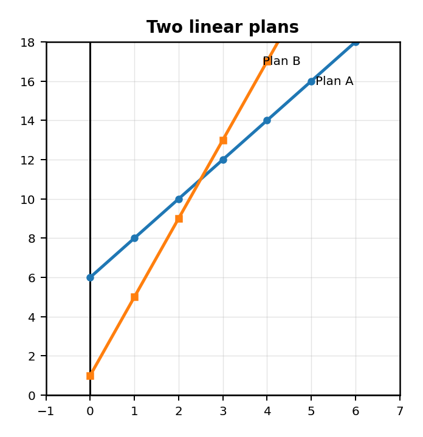
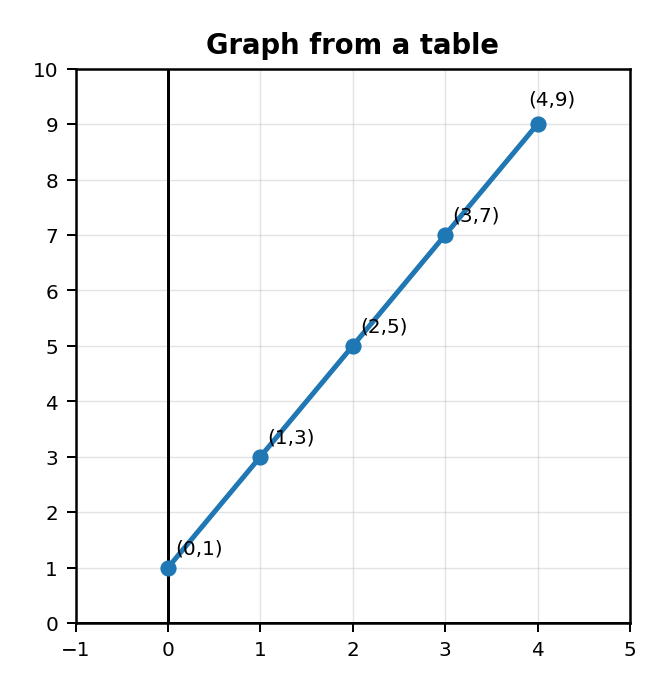
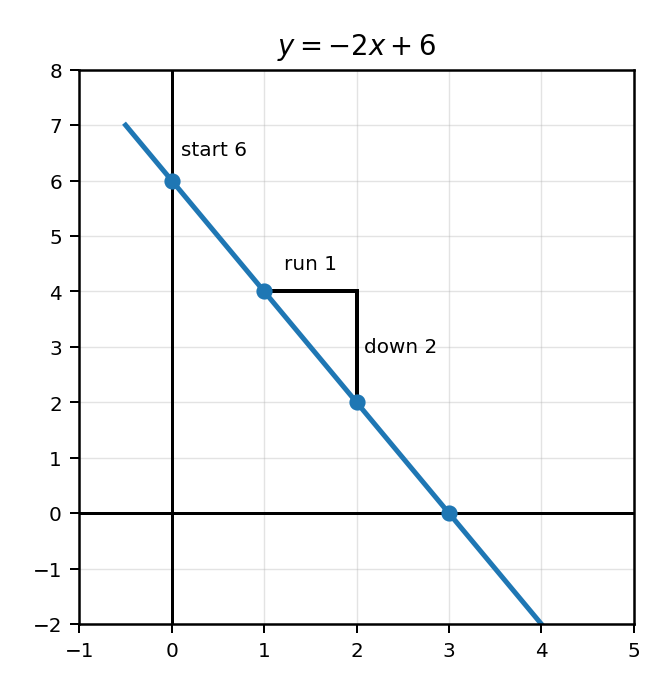
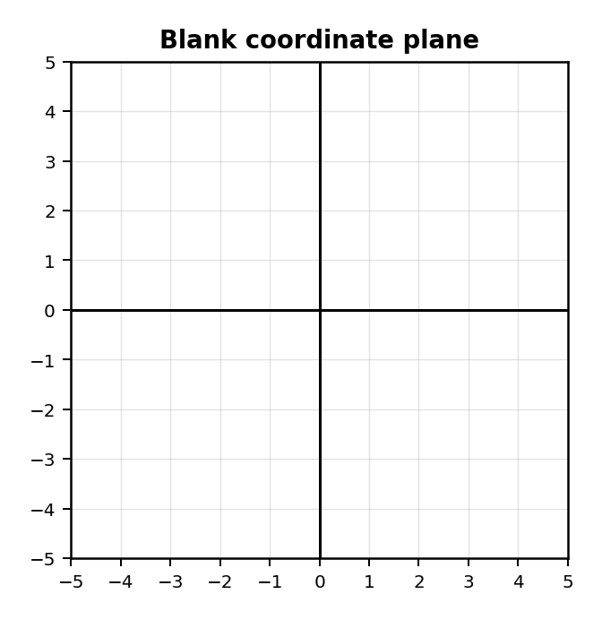
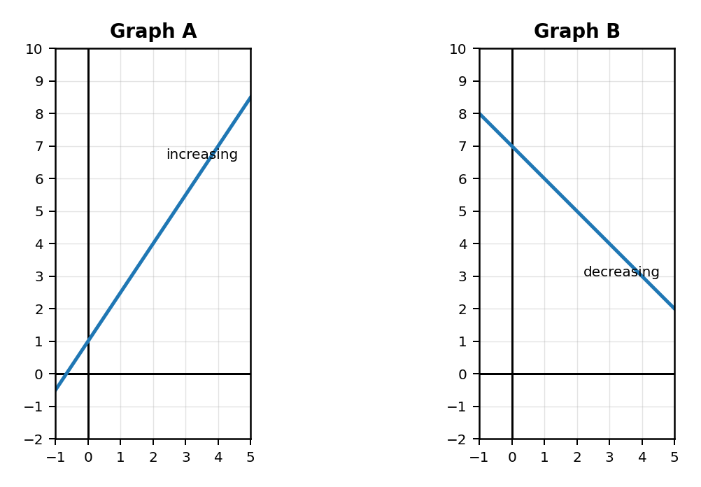
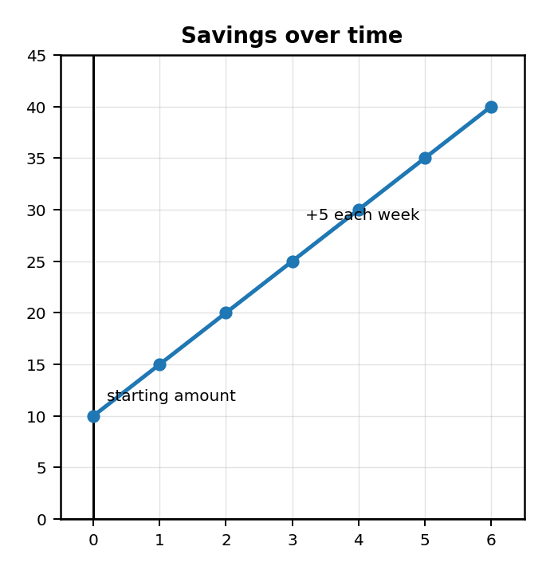

Mathematical idea: A line tells a story: where the relationship starts, how it changes, and what values are possible.
Today we will build linear graphs from tables, equations, and situations. We will focus on what the graph means, not just drawing a line.
Students will graph linear functions and interpret key features.
I can statements
This is a long-range preview for future lessons. Do not solve it today. Instead, annotate it individually. Circle anything familiar, underline symbols or directions that seem important, and write notes about what information you think will be needed later.
As you annotate, ask yourself: Where does each graph start? Which graph changes faster? Does the lower starting value always stay lower? What graph evidence could support a recommendation?
Future Task
Two streaming plans are shown on the graph. A student says, “Plan B is always cheaper because it starts lower.”

Directions
Read the introduction aloud with a partner or in a small group. As you read, annotate the text by highlighting important ideas, circling key vocabulary, and writing short notes about connections, questions, or predictions in the margins.
A linear function makes a straight-line graph. The line is straight because the relationship changes at a constant rate. That means the output changes by the same amount again and again when the input changes by equal steps.
A graph can show important features quickly. The intercept shows where the line crosses an axis. The $y$-intercept often shows the starting value when $x=0$. The slope shows how much the output changes for each 1-unit change in the input.
There is more than one way to graph a linear function. You can make a table of input-output pairs. You can start at the $y$-intercept and use the slope. You can also use a context to decide what the starting value and rate of change mean.
A good graph is not just a drawing. It is a model. The axes, scale, points, and line should match the situation and help someone understand the relationship.
Stop and Discuss
A table lists input-output pairs. Each pair becomes a point on the coordinate plane. After plotting the points, check whether they form a straight line.
Linear graph: A graph that forms a straight line because the rate of change is constant.
Use the table to graph the linear function.
| $x$ | $0$ | $1$ | $2$ | $3$ | $4$ |
|---|---|---|---|---|---|
| $y$ | $1$ | $3$ | $5$ | $7$ | $9$ |

Explain how the table and graph both show the same starting value and constant change.
Complete the table for $y=3x+2$ using $x=0$, $1$, $2$, and $3$. Then describe what the graph should look like before you sketch it.
| $x$ | $0$ | $1$ | $2$ | $3$ |
|---|---|---|---|---|
| $y$ |
Stop and Discuss
In slope-intercept form, $y=mx+b$, the value of $b$ is the $y$-intercept and the value of $m$ is the slope. Start at the intercept, then use the slope to find more points.
Graphing idea: Start at $b$ on the $y$-axis. Then use $m$ as rise over run to move to another point.
Graph $y=-2x+6$ using the $y$-intercept and slope. Then explain what the slope tells the graph to do.

Graph $y=\frac{1}{2}x+3$ on the blank grid. Mark the $y$-intercept first, then use the slope to find at least two more points.

A line can increase, decrease, or stay flat. The direction depends on the slope. The intercepts and points help us describe what the graph means.
Compare the two graphs. Identify which line is increasing and which line is decreasing. Then explain how the slope affects the direction.

A line has a positive slope and crosses the $y$-axis at $-4$. Describe what the graph should do. Then sketch a possible graph and label the intercept.
Stop and Discuss
When a graph represents a context, the axes, starting value, and rate of change should all make sense. A graph can help us make predictions, but the prediction should be reasonable for the situation.
A student starts with \\$10 in savings and adds \\$5 each week. Use the graph to explain the starting value, the rate of change, and one reasonable prediction.

A plant is $6$ cm tall and grows $2$ cm each week. Sketch a graph that matches the situation. Label both axes and explain what the $y$-intercept and slope mean.
Stop and Discuss
Optional Reflection: Look back at the future task. Do not solve it yet.